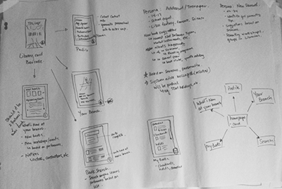
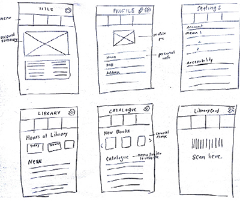

My partner and I imagined a concept for a Toronto Public Library (TPL) app in order to address needs of usability and incorporation of smart phones. Reflecting on our personal experiences, we wanted to make the library experience more enjoyable by integrating the system into a personalized mobile application.
We examined TPL client habits and service gaps from official TPL reports online. We found that awareness of library services is low, and the main uses of the TPL website are to access the catalogue, holding and renewing items and finding hours/services. We analyzed existing library apps including Bibliocommons, and found issues in their interfaces and interaction design that limited usability and created barriers. To make our design more inclusive, we studied accessibility standards in Ontario and universal design principles. Additionally, we studied the flow of borrowing a book, finding a book, etc.
Digital Library Card
The library card will be a tap away on LIBRAR-e, eliminating the need to carry another card!
Personalized Experience
Important details such as fees, and checked out items would be displayed on the main screen.
Based on a user's library preferences and past borrowing history, the app would display relevant catalogue suggestions and information.
Context-Specific Information
The user can learn more about events and special news at their home library. Additionally, they can search the catalogue at that specific library.
Target Audience
We aimed our design at technology savvy people while addressing issues in accessibility (e.g., colour contrast, languages, visual impairment.)
Storyboard sketches illustrating potential use cases for LIBRAR-e (e.g., looking for a specific book in the library and checking out a book using the digital library card.)   Sketches of the information architecture (by Crystal Chin) and sketch wireframes of the main app screens. We went through several iterations, comparing the potential difference in interaction between a pull-out side menu and a menu that was always present. Given that we only had 4 main functions, we decided to use an always present button menu.
In designing the final mockups, I chose a more modern and minimal flat design. I used minimalistic icons, a clear typeface and contrasting colours to convey which elements were active/selected, as per web accessibility standards. We also designed a mascot for LIBRAR-e: a helpful robot named Dewey!
March-April 2014
© 2015 Allison Yan